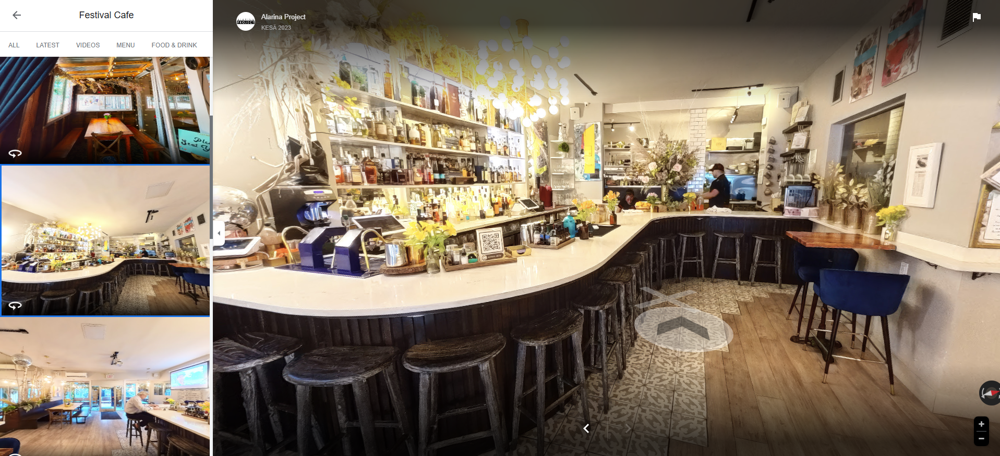

Kahvilat

Virtuaalikierrokset - Kahvilat
Tuo asiakkaasi sisään jo ennen ensimmäistä käyntiä! Kilpailu asiakkaista on kovaa, ja erottautuminen on tärkeää. Virtuaalikierros antaa kahvilallesi mahdollisuuden loistaa jo ennen kuin asiakkaat astuvat ovesta sisään. Anna heille mahdollisuus tutustua tunnelmaan, sisustukseen ja valikoimaan mukavasti omalta kotisohvaltaan. Kun asiakas näkee, miten viihtyisä kahvilasi on, kynnys tulla paikan päälle madaltuu merkittävästi!
Virtuaalikierroksen avulla voit parantaa kahvilasi näkyvyyttä verkossa ja houkutella uusia asiakkaita ilman jatkuvia mainoskuluja. Monet ihmiset etsivät täydellistä paikkaa tapaamisille tai työskentelyyn, olipa kyseessä opiskelijat, yrittäjät tai ystävykset, jotka haluavat viettää aikaa rauhallisessa ympäristössä. Kun asiakkaat voivat etukäteen tutustua tilan tunnelmaan, yksityisyyteen ja viihtyisyyteen, he valitsevat kahvilasi muita todennäköisemmin.
Edut virtuaalikierroksista:
- Asiakkaat voivat tutustua kahvilan tunnelmaan etukäteen ja innostua jo verkossa.
- Virtuaalikierros parantaa näkyvyyttä Google-haussa ja Mapsissa.
- Se erottaa kahvilasi kilpailijoista visuaalisella ja modernilla otteella.
- Kierros herättää luottamusta näyttämällä siisteyden, tilaratkaisut ja viihtyisyyden.
- Se houkuttelee paikalle enemmän kävijöitä ilman jatkuvaa mainontaa.
- Virtuaalikierrosta voi hyödyntää tehokkaasti somessa, verkkosivuilla ja mainoskampanjoissa.
Mihin niitä voi käyttää?
Virtuaalikierros voidaan toteuttaa kahdella eri tavalla, kuten Google Street View -integraationa, nettisivuille upotettuna interaktiivisena kokemuksen, joka sisältää esimerkiksi menun, tarjoustiedot tai varausmahdollisuuden. Tämä ei ainoastaan helpota asiakkaiden päätöksentekoa, vaan myös vahvistaa kahvilasi brändiä ja tuo sille lisänäkyvyyttä.
Miten prosessi etenee:
- Sopimus - Allekirjoitamme kauppa sopimuksen sähköisesti puolustaaksemme molempia päitä
- Suunnittelu - Sovitaan kuvauspäivä ja aika sekä käydään läpi toiveesi. (kuvauksen aikana olisi hyvä jos tilassa ei ole minkäänlaista liikettä, tämä parantaa kuvien laatua)
- 360° Valokuvaus - Taltioimme tilasi korkealaatuisilla 360 asteen kuvilla.
- Editointi ja julkaisu. Viimeistelemme kierroksen ja julkaisemme sen Google Mapsiin ja lähetämme nettisivu valmiin linkin kierroksesta. (tarvittaessa myös embed koodin)
Hinnat
- Google virtuaalikierroksen hinta määräytyy ravintolasi koon mukaan ja maksat vain kerran ilman jatkuvia kuukausimaksuja. Hinnat alkavat 450 eurosta.
- Voit halutessasi lisätä tilaukseen 360 tai 3D nettisivu valmiin virtuaalikierrokseen! Molemmat lisäävät hintaa alkaen 100€
- 360 nettisivu versiossa veloitamme 2€ kuukaudessa ilmaisen 12kk verkkohotellin jälkeen. 3D nettisivu versiossa veloitamme 10€ kuukaudessa ilmaisen 3kk verkkohotellin jälkeen.
Ota yhteyttä!
Ota yhteyttä, niin kerromme miten voimme auttaa sinua hyödyntämään virtuaalitodellisuutta kohteessasi. Rakennamme juuri sinun tarpeisiisi sopivan ratkaisun!